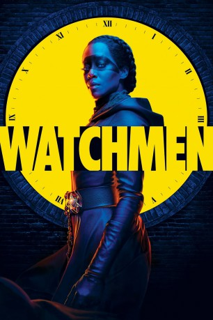

")
 
 IMDB-Wertung: 8.0 / 10
IMDB-Wertung: 8.0 / 10  Tomatometer: 64
Tomatometer: 64  Metascore:
Metascore: 
In dieser Serie haben Superhelden den Lauf der Geschichte entscheidend verändert. Wegen ihrer brutalen Methoden wurden ihre maskierten Anhänger jedoch verboten. Als die rassistische Terrorgruppe "Siebte Kavallerie" beginnt, Anschläge zu verüben, bekommt Polizeichef Judd Crawford Unterstützung von Angela Abar, einer Polizistin, die ein Doppelleben als maskierte Rächerin führt.
Jahr: 2019
Dauer: 58 Minuten
FSK: 16
Land: USA Studio: HBOTonspuren:
Untertitel:
Auflösung: 1080p (1920x1080) Größe: 3010 MB
Genre: Action, Drama, Sci-Fi, Mystery, TV-Serie
Regisseur: Nicole Kassell, Stephen Williams, Steph Green, Andrij Parekh, David Semel
Drehbuch: Dave Gibbons, Damon Lindelof, Alan Moore, Nick Cuse, Lila Byock
Soundtrack:
Darsteller:
 Regina King als Angela Abar, 9 episodes, 2019
Regina King als Angela Abar, 9 episodes, 2019 Yahya Abdul-Mateen II als Cal Abar, 8 episodes, 2019
Yahya Abdul-Mateen II als Cal Abar, 8 episodes, 2019 Jeremy Irons als Adrian Veidt, 8 episodes, 2019
Jeremy Irons als Adrian Veidt, 8 episodes, 2019 Andrew Howard als Red Scare, 7 episodes, 2019
Andrew Howard als Red Scare, 7 episodes, 2019 Louis Gossett Jr. als Will Reeves, 7 episodes, 2019
Louis Gossett Jr. als Will Reeves, 7 episodes, 2019 Jean Smart als Laurie Blake, 6 episodes, 2019
Jean Smart als Laurie Blake, 6 episodes, 2019 Tim Blake Nelson als Wade Tillman, 6 episodes, 2019
Tim Blake Nelson als Wade Tillman, 6 episodes, 2019 Frances Fisher als Jane Crawford, 5 episodes, 2019
Frances Fisher als Jane Crawford, 5 episodes, 2019 Don Johnson als Judd Crawford, 4 episodes, 2019
Don Johnson als Judd Crawford, 4 episodes, 2019 Valeri Ross als Old Woman, 2 episodes, 2019
Valeri Ross als Old Woman, 2 episodes, 2019 Charles Green als Preacher, 2 episodes, 2019
Charles Green als Preacher, 2 episodes, 2019 Jake McDorman als Nelson Gardner, 1 episode, 2019
Jake McDorman als Nelson Gardner, 1 episode, 2019 Glenn Fleshler als Fred, 1 episode, 2019
Glenn Fleshler als Fred, 1 episode, 2019 Paula Malcomson als Renee, 1 episode, 2019
Paula Malcomson als Renee, 1 episode, 2019 Steve Coulter als Simmons, 1 episode, 2019
Steve Coulter als Simmons, 1 episode, 2019 Lee Tergesen als Mister Shadow, 1 episode, 2019
Lee Tergesen als Mister Shadow, 1 episode, 2019 Jim Beaver als Andy, 1 episode, 2019
Jim Beaver als Andy, 1 episode, 2019 Anatole Taubman als Hans Osterman, 1 episode, 2019
Anatole Taubman als Hans Osterman, 1 episode, 2019 Adam Drescher als Agent Jerry, 1 episode, 2019
Adam Drescher als Agent Jerry, 1 episode, 2019Datei: X:\Comic-Serien\Watchmen\Watchmen S01E01.mkv seit 31.12.2019
Festplatte: Comicverfilmungen+MusikCD
 Es gibt insgesamt 34 Filme in der Gruppe 'Comic-Serien'
Es gibt insgesamt 34 Filme in der Gruppe 'Comic-Serien'